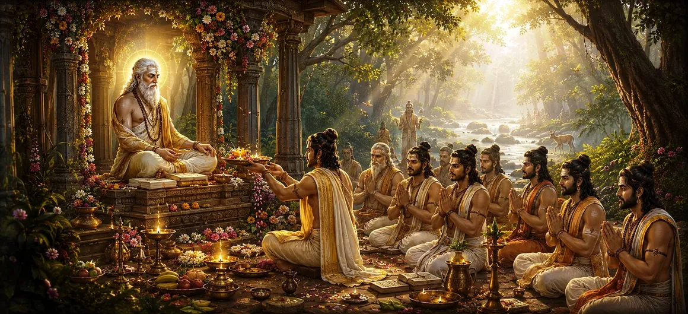

व्यास की विधिवत पूजा
अध्याय 42 में पितरों की शक्ति पर गहन व्याख्या के बाद, उमा संहिता का तैंतालीसवाँ अध्याय पवित्र ग्रंथों के सर्वोच्च संकलनकर्ता महर्षि व्यास के प्रति अत्यधिक श्रद्धा, सम्मान और उचित पूजा पर ध्यान केंद्रित करता है।
यह अध्याय गुरु ऋषि को सम्मानित करने के सटीक तरीकों का विवरण देता है, इस बात पर जोर देता है कि आध्यात्मिक ज्ञान केवल तभी खिल सकता है जब कोई वेदों और पुराणों की संरचना करने वाले आदि गुरु के प्रति गहरी कृतज्ञता व्यक्त करता है।
पवित्र दिशानिर्देशों के माध्यम से, पाठ इस बात पर प्रकाश डालता है कि कैसे व्यास की पूजा करने से अज्ञानता नष्ट हो जाती है और सच्ची मुक्ति का द्वार खुल जाता है।
अध्याय 43 की मुख्य बातें
व्यास की विरासत
पवित्र ज्ञान की संरचना में व्यास की महत्वपूर्ण भूमिका का जश्न मनाता है।
गुरु श्रद्धा
परम आध्यात्मिक मार्गदर्शक के सम्मान के मूलभूत महत्व को रेखांकित करता है।
अनुष्ठानिक आराधना
व्यास पूजा में उपयोग किए जाने वाले विशिष्ट प्रसाद और मानसिक ध्यान का विवरण।
अज्ञान का नाश
बताते हैं कि कैसे व्यास की भक्ति अंधकार और बौद्धिक भ्रम को दूर करती है।
शास्त्र अध्ययन
सक्रिय धर्मग्रंथ पढ़ने को उसके संकलनकर्ता के प्रति प्रत्यक्ष श्रद्धांजलि के साथ जोड़ता है।
ईश्वरीय कृपा
पुष्टि करता है कि व्यास की कृपा शिव के साथ परम मिलन का मार्ग प्रशस्त करती है।
इस अध्याय में मुख्य विषय
- 01 सत्य के संरक्षण में व्यास की सर्वोच्च भूमिका →
- 02 मानसिक एवं शारीरिक उपासना की विधियाँ →
- 03 उचित पेशकश और कृतज्ञता की अभिव्यक्ति →
- 04 गुरु की कृपा से आंतरिक अंधकार को दूर करना →
- 05 श्रद्धांजलि के कार्य के रूप में पुराणों का अध्ययन करना →
- 06 महान शिक्षकों की वंशावली से जुड़ना →
- 07 व्यास पूजा का आध्यात्मिक फल और प्रतिफल →
- 08 बौद्धिक समझ के साथ भक्ति का सामंजस्य →
- 09 व्यास और भगवान शिव के बीच अंतिम संबंध →
- 10 ऋषि व्यास के जन्म के लिए परिवर्तन →
सत्य के संरक्षण में व्यास की सर्वोच्च भूमिका
अध्याय 43 महर्षि व्यास की मानवता के सर्वोच्च साहित्यिक और आध्यात्मिक उपकारक के रूप में प्रशंसा करते हुए शुरू होता है, जिन्होंने एकल वेद को चार शाखाओं में विभाजित किया और विशाल पौराणिक विद्या का संकलन किया।
उनके अथक परिश्रम के बिना, दिव्य ज्ञान पीढ़ी-दर-पीढ़ी खंडित या लुप्त हो गया होता।
उनका स्मारकीय कार्य समस्त वैदिक संस्कृति का आधार है।
मानसिक एवं शारीरिक उपासना की विधियाँ
शास्त्र ऋषि व्यास की पूजा करने की दोहरी पद्धति की व्याख्या करता है, जिसमें उनके चमकदार रूप पर आंतरिक ध्यान और बाहरी अनुष्ठानिक सम्मान दोनों शामिल हैं।
साधकों को निर्देश दिया जाता है कि वे उन्हें गहन चिंतन में बैठे हुए, पवित्र ग्रंथ हाथ में लिए हुए, शुद्ध ज्ञान बिखेरते हुए देखें।
आंतरिक श्रद्धा बाहरी अभ्यास को सहारा देती है।
उचित पेशकश और कृतज्ञता की अभिव्यक्ति
व्यास पूजा का आयोजन करते समय, भक्त गहरी कृतज्ञता के सूत्रों का जाप करते हुए पवित्र फूल, धूप, अखंड चावल के दाने और सम्मानजनक साष्टांग प्रणाम करते हैं।
पाठ इस बात पर जोर देता है कि व्यास के लिए सबसे बड़ी भेंट पुराणों में निहित शिक्षाओं का अध्ययन करने और उन्हें अपनाने का एक ईमानदार व्रत है।
सच्ची कृतज्ञता नेक कार्य में परिवर्तित होती है।
गुरु की कृपा से आंतरिक अंधकार को दूर करना
अध्याय 43 इस बात पर प्रकाश डालता है कि अज्ञानता सभी मानवीय दुखों का मूल कारण है। भक्तिपूर्वक व्यास की ओर मुड़कर, साधक एक परिवर्तनकारी प्रकाश का आह्वान करता है जो भ्रम और संदेह को जला देता है।
गुरु आध्यात्मिक विकास का मार्ग प्रशस्त करते हुए, अंधकार को दूर करने वाले के रूप में कार्य करता है।
ईश्वरीय ज्ञान बंधी हुई आत्मा को मुक्त करता है।
श्रद्धांजलि के कार्य के रूप में पुराणों का अध्ययन करना
इस अध्याय में एक असाधारण शिक्षा यह है कि जब भी कोई व्यक्ति शुद्ध मन से शिव पुराण या अन्य पवित्र ग्रंथों को पढ़ता या सुनता है, तो वह सक्रिय रूप से ऋषि व्यास की पूजा कर रहा होता है।
धर्मग्रंथ स्वयं जीवित वेदी बन जाता है जिस पर गुरु का सम्मान किया जाता है।
पाठ्य अध्ययन स्मरण का उच्चतम रूप है।
महान शिक्षकों की वंशावली से जुड़ना
पाठ व्यास को गुरु परंपरा (शिक्षक वंश) के शिखर पर रखता है, उम्मीदवारों को याद दिलाता है कि उनका सम्मान करना उन्हें प्रबुद्ध गुरुओं की एक अटूट श्रृंखला से जोड़ता है।
यह संबंध आध्यात्मिक सुरक्षा प्रदान करता है और यह सुनिश्चित करता है कि अभ्यास पूर्ण सत्य के साथ जुड़ा रहे।
वंशावली अनुग्रह व्यक्तिगत प्रयास को सशक्त बनाता है।
व्यास पूजा का आध्यात्मिक फल और प्रतिफल
जो लोग नियमित रूप से महर्षि व्यास की पूजा करते हैं उन्हें बुद्धि की तीव्रता, उद्देश्य की स्पष्टता, गहन शास्त्रीय समझ और भगवान शिव के दिव्य चरणों के प्रति स्थिर भक्ति प्राप्त होती है।
इस पूजा के पुरस्कारों में सांसारिक सफलता और परम आध्यात्मिक मुक्ति दोनों शामिल हैं।
बुद्धि पूर्ण तृप्ति लाती है।
बौद्धिक समझ के साथ भक्ति का सामंजस्य
अध्याय 43 इस बात पर जोर देता है कि व्यास की सच्ची पूजा गहरी बौद्धिक जांच (ज्ञान) के साथ भावनात्मक भक्ति (भक्ति) को जोड़ती है, जिससे पता चलता है कि उच्च सत्य को समझने के लिए दिल और दिमाग को एकजुट होना चाहिए।
एक संतुलित साधक बुद्धि को अनुग्रह के प्रति समर्पित रखते हुए उसका सम्मान करता है।
प्राप्ति के लिए मस्तिष्क और हृदय मिलकर काम करते हैं।
व्यास और भगवान शिव के बीच अंतिम संबंध
अध्याय यह पुष्टि करते हुए अपने मूल निर्देशों को समाप्त करता है कि व्यास भगवान विष्णु/शिव के ज्ञान पहलू का अवतार हैं, जो सर्वोच्च इच्छा के एक उपकरण के रूप में कार्य करते हैं।
इसलिए, व्यास का सम्मान करना, सभी ज्ञान के स्रोत, भगवान शिव की पूजा करने का एक अप्रत्यक्ष लेकिन शक्तिशाली तरीका है।
सभी गुरु शिव की सर्वोच्च चेतना में विलीन हो जाते हैं।
ऋषि व्यास के जन्म के लिए परिवर्तन
अध्याय 43 में ऋषि व्यास की पूजा करने की उचित विधियों और आवश्यकता को स्थापित करने के बाद, कथा उनकी उल्लेखनीय जीवन कहानी को उजागर करने के लिए तैयार होती है।
पाठ अध्याय 44 के लिए मंच तैयार करता है, जिसमें महर्षि व्यास के जन्म के आसपास की दैवीय परिस्थितियों का विवरण होगा।
पाठकों को महान ऋषि की पौराणिक उत्पत्ति के बारे में मार्गदर्शन दिया जाता है।
अध्याय 43 की मुख्य शिक्षाएँ
परम हितैषी
महर्षि व्यास ने वेदों को व्यवस्थित और पुराणों का संकलन कर शाश्वत सत्य की रक्षा की।
दोहरी पूजा
व्यास पूजा में आंतरिक चिंतन और बाह्य कर्मकांडीय श्रद्धा दोनों शामिल हैं।
श्रद्धांजलि के रूप में अध्ययन करें
पवित्र धर्मग्रंथों को पढ़ना और आत्मसात करना गुरु के सम्मान का सर्वोच्च रूप है।
अँधेरा हटाना
आदि गुरु के प्रति भक्ति अज्ञान, संदेह और आध्यात्मिक भ्रम को दूर करती है।
परम्परा कनेक्शन
व्यास का सम्मान साधकों को प्रबुद्ध गुरुओं की एक अटूट श्रृंखला से जोड़ता है।
शिव एकता
व्यास से उत्पन्न सारा ज्ञान अंततः शिव के परम कमल चरणों तक ले जाता है।
आध्यात्मिक चिंतन
अध्याय 43 हमारी आध्यात्मिक विरासत को आकार देने वाले महान शिक्षकों के प्रति हमारे अपार ऋण की गहन याद दिलाता है। महर्षि व्यास केवल हिंदू परंपरा में एक ऐतिहासिक व्यक्ति नहीं हैं; वह शास्त्रीय ज्ञान का अवतार और हमारे पवित्र ग्रंथों के मास्टर वास्तुकार हैं। मानसिक भक्ति, कर्मकांडीय सम्मान और पुराणों के समर्पित अध्ययन के माध्यम से - उनकी ठीक से पूजा और आदर करना सीखकर - हम अपने दिमाग को उच्च समझ के लिए खोलते हैं। यह अध्याय हमें सिखाता है कि सच्चा आध्यात्मिक विकास अलगाव में नहीं हो सकता; इसके लिए विनम्रता, कृतज्ञता और उन गुरुओं की वंशावली के साथ गहरे संबंध की आवश्यकता होती है जिनकी कृपा हमें अंधकार से बाहर निकालकर भगवान शिव के शाश्वत प्रकाश की ओर ले जाती है।
अध्याय 43 का संदेश जीना
अपने शिक्षकों, गुरुओं और मानवता के लिए आध्यात्मिक ज्ञान को संरक्षित करने वाले महान संतों के प्रति दैनिक कृतज्ञता विकसित करें।
शिव पुराण जैसे पवित्र ग्रंथों के अध्ययन को अकादमिक अभ्यास के रूप में नहीं, बल्कि व्यास के साथ प्रत्यक्ष पूजा और संवाद के रूप में देखें।
जहां भी आपको ज्ञान मिले, उसका सम्मान करें, अपनी बुद्धि को विनम्र रखें और परम सत्य की खोज के लिए समर्पित रहें।
प्रमुख आध्यात्मिक अवधारणाएँ
वेदों, महाभारत और अठारह पुराणों के सर्वोच्च संकलनकर्ता।
आदिम आध्यात्मिक गुरु को दी जाने वाली अनुष्ठानिक और मानसिक आराधना।
युगों-युगों तक आध्यात्मिक ज्ञान प्रसारित करने वाले प्रबुद्ध गुरुओं की अटूट वंशावली।
आंतरिक अज्ञान को दूर करने के लिए उच्च ज्ञान प्राप्त करने की साधना।
सक्रिय पाठ अध्ययन के माध्यम से लेखक-ऋषि के साथ सीधे संबंध का अनुभव करना।
गुरु कृपा से भगवान शिव के चरण कमलों में मुक्ति की चरम प्राप्ति।
अध्याय सारांश
उमा संहिता अध्याय 43 पवित्र साहित्य के उत्कृष्ट संकलनकर्ता महर्षि व्यास के सम्मान के महत्वपूर्ण महत्व को स्थापित करता है। यह मानसिक ध्यान और कर्मकांडीय पूजा की दोहरी विधियों को रेखांकित करता है, बताता है कि कैसे धर्मग्रंथ का अध्ययन श्रद्धांजलि के जीवंत रूप के रूप में कार्य करता है, और इस बात पर प्रकाश डालता है कि कैसे गुरु के प्रति समर्पण अज्ञान को नष्ट कर देता है। शिक्षक वंश और भगवान शिव के अधीन आध्यात्मिक मुक्ति के बीच संबंध पर जोर देते हुए, अध्याय 44 में ऋषि व्यास की चमत्कारी जन्म कहानी में बदलने से पहले गुरु श्रद्धा के लिए एक संपूर्ण रूपरेखा प्रदान करता है।
अक्सर पूछे जाने वाले प्रश्न
① उमा संहिता अध्याय 43 का मुख्य विषय क्या है?
प्राथमिक ध्यान आध्यात्मिक साहित्य में उनके महान योगदान के लिए महान ऋषि व्यास की पूजा, श्रद्धा और कृतज्ञता की उचित पद्धति पर है।
② अध्याय 43 अध्याय 42 का अनुसरण कैसे करता है?
अध्याय 42 में पितरों की शक्ति स्थापित करने के बाद, अध्याय 43 वेदों और पुराणों के परम आध्यात्मिक शिक्षक और संकलनकर्ता का सम्मान करने में सुचारू रूप से परिवर्तित होता है।
③ हिंदू परंपरा में ऋषि व्यास को इतना उच्च सम्मान क्यों दिया जाता है?
व्यास ने वेदों का वर्गीकरण किया, महाभारत लिखा और मानवता के लिए आध्यात्मिक ज्ञान को संरक्षित करते हुए सभी अठारह प्रमुख पुराणों का संकलन किया।
④ व्यास के सम्मान के लिए किस विशिष्ट प्रकार की पूजा की सिफारिश की जाती है?
मानसिक आराधना, पवित्र ग्रंथों का अध्ययन, शिक्षकों का सम्मान, और गहरी भक्ति के साथ अनुष्ठानिक प्रार्थनाएँ करना।
⑤ अध्याय 43 अध्याय 44 में कैसे परिवर्तित होता है?
अध्याय 43 सीधे अध्याय 44 में ले जाता है, जिसमें ऋषि व्यास के जन्म के आसपास की दैवीय परिस्थितियों का विवरण है।
⑥ व्यास द्वारा उदाहरण के रूप में गुरु पूजा का आध्यात्मिक महत्व क्या है?
यह अज्ञानता को दूर करता है, साधक को दिव्य ज्ञान के साथ जोड़ता है, और आदि गुरु की कृपा से मुक्ति प्रदान करता है।
"भक्ति और शास्त्र अध्ययन के माध्यम से महर्षि व्यास का सम्मान करने से आंतरिक अंधकार दूर हो जाता है और शाश्वत मुक्ति का द्वार खुल जाता है।"
उमा संहिता के माध्यम से जारी रखें
अध्याय 43 व्यास की उचित पूजा की पड़ताल करता है। इस अध्याय के समाप्त होने के साथ, ऋषि व्यास के जन्म की खोज के लिए अध्याय 44 में आगे बढ़ें।